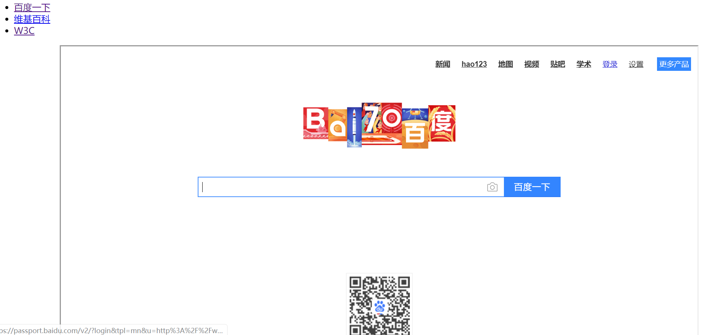

（1） 图片：img元素
src 属性：图片路径；
alt 属性：图片无法显示时使用的替代文字；
title：鼠标悬停时显示的文字 ；
1 <img src="图片路径" alt="图片无法显示时使用的替代文本"title="鼠标悬停时出现的文字">（2） 视频：video元素
src 属性：视频路径 ；
controls 属性：【布尔属性】指定后，会显示播放控件；
autoplay ：【布尔属性】指定后，视频在页面显示后立即进入播放状态；
muted ：静音，某些浏览器强制提升用户体验自动播放时需设置该属性；
loop ：【布尔属性】指定后，视频将循环播放；
height：设置视频播放器的高度；
width：设置视频播放器的宽度；
poster：规定视频下载时显示的图像，或者是在当用户点击播放按钮前显示的图像。
Preload：如果出现该属性，则视频在页面加载时进行加载，并预备播放。如果使用“autoplay”则忽略该属性。
<video src="img/herocute.mp4" controls width="100%" muted autoplay poster="img/gallery-img3.png"></video>（3） 音频：audio元素
src 属性：音频路径；
controls 属性：【布尔属性】指定后，会显示播放控件；
autoplay ：【布尔属性】指定后，视频在页面显示后立即进入播放状态；
muted ：静音 某些新浏览器强制提升用户体验 自动播放时需设置该属性；
loop ：【布尔属性】指定后，视频将循环播放；
（4） figure元素
（5） 可替换元素和非可替换元素
可替换元素：元素的显示内容，由其属性决定，比如img、video、audio；
非可替换元素：元素的显示内容，由元素内容决定，绝大部分元素都是非可替换元素。
嵌入式元素用于向网页中嵌入外部资源。
（1） 向网页中嵌入图片资源，img元素、area元素、map元素；
（2） 向网页嵌入视频资源，video元素；
（3） 向网页中嵌入音频资源，audio元素；
（4） 向网页嵌入flash程序 data相当于路径，embed元素、object元素；
（5） Iframe元素向网页嵌入图另一个页面
<ul>
<li>
<a target="all" href="https://www.baidu.com/">百度一下</a>
</li>
<li><a target="all" href="https://www.wikizero.com/">维基百科</a></li>
<li><a target="all" href="https://w3.org/">W3C</a></li>
</ul>
<iframe id="all" name="all" src="https://www.baidu.com/" frameborder="1"></iframe>效果图：

子元素 area区域 sharp区域形状（rectangle矩形 两个坐标点对角 circle圆 一个坐标 半径 ）coords区域坐标范围 id 和name兼容 在 img 上使用 usemap=“#id名”
<figure>
<img usemap="#a" src="img/gallery-img3.png" alt="">
<figcaption>绿色的苹果</figcaption>
</figure>
<map id="a" name="a">
<area shape="circle" coords="79,119,75" href="https://baike.sogou.com/v5228.htm?fromTitle=%E8%8B%B9%E6%9E%9C%EF%BC%88%E6%B0%B4%E6%9E%9C%EF%BC%89" alt="" target="_blank">
<area shape="rectangle" coords="98,43,145,177" href="https://baike.sogou.com/v5228.htm?fromTitle=%E8%8B%B9%E6%9E%9C%EF%BC%88%E6%B0%B4%E6%9E%9C%EF%BC%89" alt="">
</map>
当点击图片上的源泉部分，网页就会跳转到https://baike.sogou.com/v5228.htm?fromTitle=苹果（水果）这个网页。
（1） 行盒：display属性为inline（默认值）的元素；
（2） 常见的行盒：大部分文字元素：span、abbr、em、i、strong、b；
图片和多媒体：img、video、audio。
（3） 行盒的特征：
l 行盒可被折断，因为内容可被折断换行；
l 同一个包含块中，连续的多个行盒水平依次排列；
l 空白折叠的规则仅适用于行盒内部和行盒之间；
l 行盒与行盒之间的距离可使用水平方向上的margin和padding进行设置。